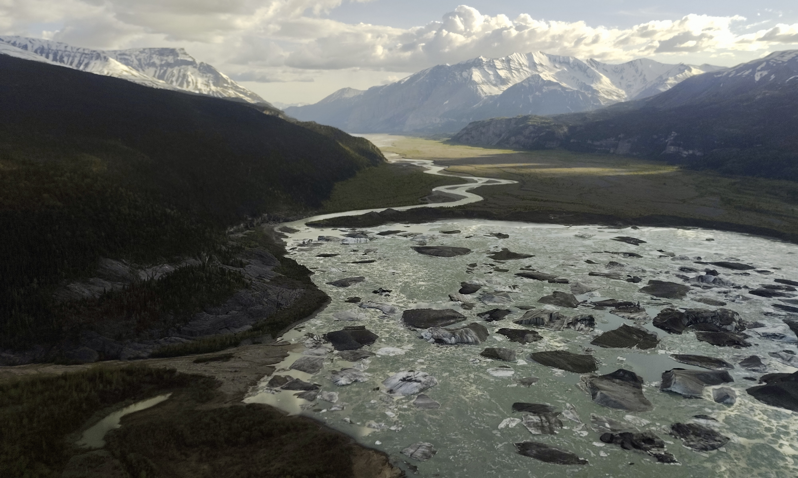

Contact
I am currently seeking postdoctorate opportunities, and would love to be in touch.

Wrangell Mountains, Alaska, June 2026
Light Phone III
I am currently seeking postdoctorate opportunities, and would love to be in touch.
